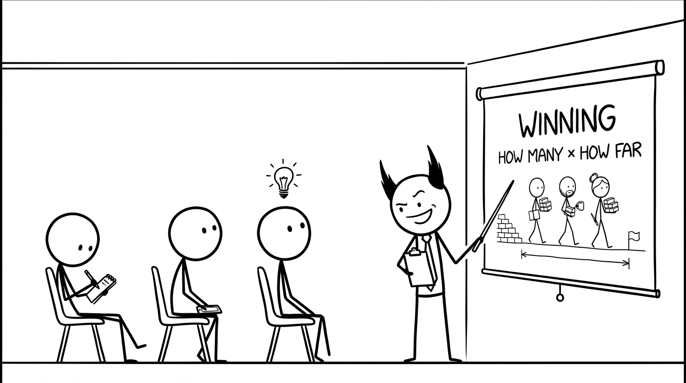

<section id="define-win" data-transition="fade" style="display:flex; align-items:center; justify-content:center; padding:0; background:#fcfcfa">

<p style="position:absolute;left:0;bottom:10px;width:1920px;margin:0;text-align:center;font-family:'Patrick Hand', 'Trebuchet MS', sans-serif;font-size:22px;color:#8a8f98">Copyright Dobromir Montauk 2026</p>
<aside><b>Winning.</b> A win is one turn: one week of engineering. Both factors matter. A thousand bricks moved sideways scores zero; one brick delivered all the way counts. Ask the room: by this measure, what did your team win last week?</aside>
</section>
